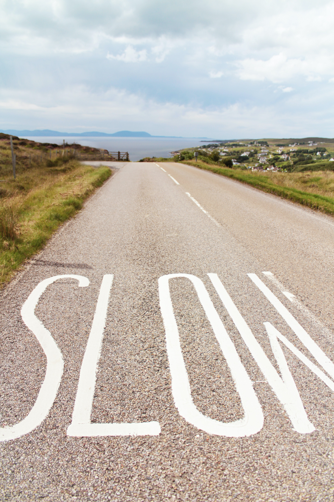
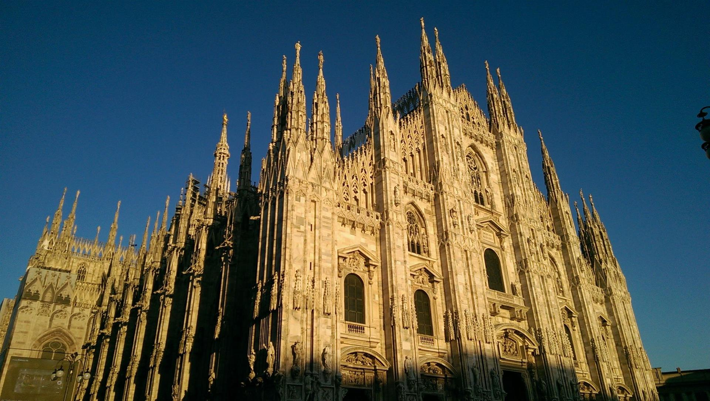

I get lots of ideas while running or thinking about running so its inevitable that my writing will have something to do with running. Being a card carrying member of the back-of-the-pack club comes with perpertual struggle to reconcile where you are and where you ought to be. It has been anever ending battle for a while but I eventually came to not only accept but also embrace slowness. Here is why:
1. Stubbornness
With all this talk of running, many people assume I’m super fast. I’ve gotten used to the transition from impressed to disappointed face when folks hear how much I run and then how slow I am. I get it, as adults we have been conditioned to do things that either have tangible rewards or we are really good at. It doesn’t make sense to invest so much time in something that doesn’t tick any of those boxes. Why keep running when I’m nowhere close to a real runner? Well, I can think of lots of reasons other than the obvious ones of fun, physical and mental health. There is value in granting myself permission to fail over and over again; It keeps me grounded, humble and curious. More importantly, it gives me confidence to be stubborn and take risks; that has paid off in seemingly unexpected ways.
2. Acceptance
Back when I was starting out running, I felt ashamed every time I mentioned my pace. I felt the need to suffix it with “… but I’m working on getting faster”, as if running at my pace was some kind of crime. After years of agony and self pity to no avail I chose acceptance. Truth is, different genetics and environments are bound to produce varying abilities in running and pretty much any other skill. I may struggle with what comes naturally to others and that’s okay. It is futile to fight the things we can’t control but working with what we have can be very rewarding. I can’t control where I start but I can how much and how fast I improve. As a result, these days I say “I’m doing my best” instead. Beyond running, this mindset has waded off loads of unnecessary stress and improved my quality of life.
3. The big picture

Every year 5 million people flock to Duomo Milan, the third largest cathedral in the world. They have their reasons, whether its the slew of statues, diversity of architecture or its general grandeur; The most obvious is hard to miss, everyone wants to see the masterpiece that took 6 centuries to build; that’s right not 6 years nor 6 decades but 6 whole centuries. It certainly didn’t feel grand when construction had to be paused over long stretches due to lack of funds or competing priorities. Da Vinci didn’t plan to work on one painting for 4 years without finishing it, his journey was probably mired with distractions, creative block and self doubt but we don’t see any of that in Monalisa. Instead we get to enjoy the big picture, quite literally. What made these masterpieces stick is the permission to be slow. The things we put off because they might take a little longer than average could be masterpieces. My running journey is not a masterpiece (yet) but I’m enjoying the slow progress I’m making. Over the past 2 years I’ve gotten faster by at least 2 min/mile. It is indeed slow progress but years from now it won’t matter as much as the milestones I will have reached.
4. Sustainability.
Stories of people who make it big in no time sound very impressive, We envy the man who wins the lottery and retires and applaud the woman who looses 90 pounds in 6 weeks. We don’t speak enough of the unfulfillment that comes from not working and the eating disorders that follow rapid weight loss. Call me old-fashioned but I’m more impressed by the person who consistently deposits into their retirement account, works out consistently and perfects their craft everyday. Gretchen Rubin wrote “What you do everyday matters more than what you do once in a lifetime” I couldn’t agree more. Slow efforts are way more practical and sustainable over the long run.
I prefer slow for good reason but I’m not totally opposed to fast. There is definitely a time and place for fast; I’ll probably sprint in a life threatening situation. Most situations I find myself in do not call for fast solutions. Life is mostly a marathon, not a sprint and tortoises shine at that. In a world that glorifies fast, allow yourself to be the sloth. I can’t promise exorbiant gains but I guarantee you’ll have a great time.